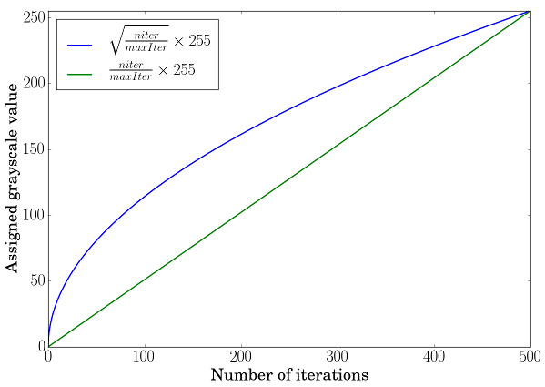
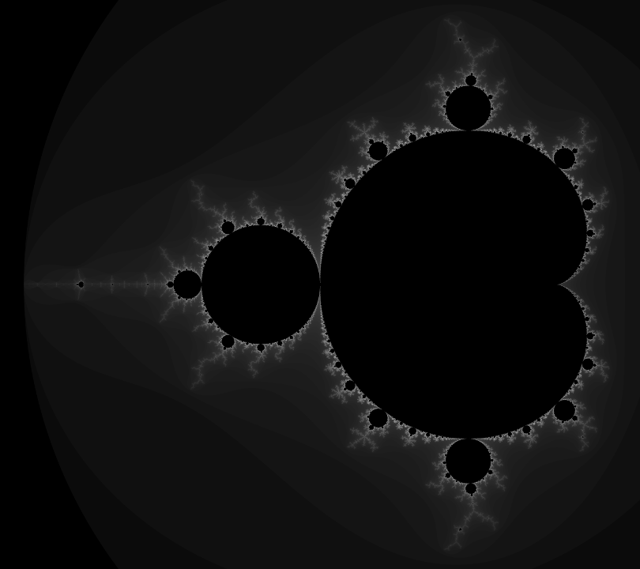

How to use the OpenCV parallel_for_ to parallelize your code
Goal
The goal of this tutorial is to show you how to use the OpenCV parallel_for_ framework to easily parallelize your code. To illustrate the concept, we will write a program to draw a Mandelbrot set exploiting almost all the CPU load available. The full tutorial code is here. If you want more information about multithreading, you will have to refer to a reference book or course as this tutorial is intended to remain simple.
Precondition
The first precondition is to have OpenCV built with a parallel framework. In OpenCV 3.2, the following parallel frameworks are available in that order:
- Intel Threading Building Blocks (3rdparty library, should be explicitly enabled)
- C= Parallel C/C++ Programming Language Extension (3rdparty library, should be explicitly enabled)
- OpenMP (integrated to compiler, should be explicitly enabled)
- APPLE GCD (system wide, used automatically (APPLE only))
- Windows RT concurrency (system wide, used automatically (Windows RT only))
- Windows concurrency (part of runtime, used automatically (Windows only - MSVC++ >= 10))
- Pthreads (if available)
As you can see, several parallel frameworks can be used in the OpenCV library. Some parallel libraries are third party libraries and have to be explictly built and enabled in CMake (e.g. TBB, C=), others are automatically available with the platform (e.g. APPLE GCD) but chances are that you should be enable to have access to a parallel framework either directly or by enabling the option in CMake and rebuild the library.
The second (weak) precondition is more related to the task you want to achieve as not all computations are suitable / can be adatapted to be run in a parallel way. To remain simple, tasks that can be splitted into multiple elementary operations with no memory dependency (no possible race condition) are easily parallelizable. Computer vision processing are often easily parallelizable as most of the time the processing of one pixel does not depend to the state of other pixels.
Simple example: drawing a Mandelbrot set
We will use the example of drawing a Mandelbrot set to show how from a regular sequential code you can easily adapt the code to parallize the computation.
Theory
The Mandelbrot set definition has been named in tribute to the mathematician Benoit Mandelbrot by the mathematician Adrien Douady. It has been famous outside of the mathematics field as the image representation is an example of a class of fractals, a mathematical set that exhibits a repeating pattern displayed at every scale (even more, a Mandelbrot set is self-similar as the whole shape can be repeatedly seen at different scale). For a more in-depth introduction, you can look at the corresponding Wikipedia article. Here, we will just introduce the formula to draw the Mandelbrot set (from the mentioned Wikipedia article).
The Mandelbrot set is the set of values of \(c\) in the complex plane for which the orbit of 0 under iteration of the quadratic map
remains bounded. That is, a complex number \(c\) is part of the Mandelbrot set if, when starting with \(z_0 = 0\) and applying the iteration repeatedly, the absolute value of \(z_n\) remains bounded however large \(n\) gets. This can also be represented as
Pseudocode
A simple algorithm to generate a representation of the Mandelbrot set is called the “escape time algorithm”. For each pixel in the rendered image, we test using the recurrence relation if the complex number is bounded or not under a maximum number of iterations. Pixels that do not belong to the Mandelbrot set will escape quickly whereas we assume that the pixel is in the set after a fixed maximum number of iterations. A high value of iterations will produce a more detailed image but the computation time will increase accordingly. We use the number of iterations needed to “escape” to depict the pixel value in the image.
For each pixel (Px, Py) on the screen, do: { x0 = scaled x coordinate of pixel (scaled to lie in the Mandelbrot X scale (-2, 1)) y0 = scaled y coordinate of pixel (scaled to lie in the Mandelbrot Y scale (-1, 1)) x = 0.0 y = 0.0 iteration = 0 max_iteration = 1000 while (x*x + y*y < 2*2 AND iteration < max_iteration) { xtemp = x*x - y*y + x0 y = 2*x*y + y0 x = xtemp iteration = iteration + 1 } color = palette[iteration] plot(Px, Py, color) }
To relate between the pseudocode and the theory, we have:
- \(z = x + iy\)
- \(z^2 = x^2 + i2xy - y^2\)
- \(c = x_0 + iy_0\)
On this figure, we recall that the real part of a complex number is on the x-axis and the imaginary part on the y-axis. You can see that the whole shape can be repeatedly visible if we zoom at particular locations.
Implementation
Escape time algorithm implementation
int mandelbrot(const complex<float> &z0, const int max) { complex<float> z = z0; for (int t = 0; t < max; t++) { if (z.real()*z.real() + z.imag()*z.imag() > 4.0f) return t; z = z*z + z0; } return max; }
Here, we used the ` <http://en.cppreference.com/w/cpp/numeric/complex>`__ template class to represent a complex number. This function performs the test to check if the pixel is in set or not and returns the “escaped” iteration.
Sequential Mandelbrot implementation
void sequentialMandelbrot(Mat &img, const float x1, const float y1, const float scaleX, const float scaleY) { for (int i = 0; i < img.rows; i++) { for (int j = 0; j < img.cols; j++) { float x0 = j / scaleX + x1; float y0 = i / scaleY + y1; complex<float> z0(x0, y0); uchar value = (uchar) mandelbrotFormula(z0); img.ptr<uchar>(i)[j] = value; } } }
In this implementation, we sequentially iterate over the pixels in the rendered image to perform the test to check if the pixel is likely to belong to the Mandelbrot set or not.
Another thing to do is to transform the pixel coordinate into the Mandelbrot set space with:
Mat mandelbrotImg(4800, 5400, CV_8U); float x1 = -2.1f, x2 = 0.6f; float y1 = -1.2f, y2 = 1.2f; float scaleX = mandelbrotImg.cols / (x2 - x1); float scaleY = mandelbrotImg.rows / (y2 - y1);
Finally, to assign the grayscale value to the pixels, we use the following rule:
- a pixel is black if it reaches the maximum number of iterations (pixel is assumed to be in the Mandelbrot set),
- otherwise we assign a grayscale value depending on the escaped iteration and scaled to fit the grayscale range.
int mandelbrotFormula(const complex<float> &z0, const int maxIter=500) { int value = mandelbrot(z0, maxIter); if(maxIter - value == 0) { return 0; } return cvRound(sqrt(value / (float) maxIter) * 255); }
Using a linear scale transformation is not enough to perceive the grayscale variation. To overcome this, we will boost the perception by using a square root scale transformation (borrowed from Jeremy D. Frens in his blog post): \(f \left( x \right) = \sqrt{\frac{x}{\text{maxIter}}} \times 255\)
The green curve corresponds to a simple linear scale transformation, the blue one to a square root scale transformation and you can observe how the lowest values will be boosted when looking at the slope at these positions.
Parallel Mandelbrot implementation
When looking at the sequential implementation, we can notice that each pixel is computed independently. To optimize the computation, we can perform multiple pixel calculations in parallel, by exploiting the multi-core architecture of modern processor. To achieve this easily, we will use the OpenCV cv::parallel_for_ framework.
class ParallelMandelbrot : public ParallelLoopBody { public: ParallelMandelbrot (Mat &img, const float x1, const float y1, const float scaleX, const float scaleY) : m_img(img), m_x1(x1), m_y1(y1), m_scaleX(scaleX), m_scaleY(scaleY) { } virtual void operator ()(const Range& range) const { for (int r = range.start; r < range.end; r++) { int i = r / m_img.cols; int j = r % m_img.cols; float x0 = j / m_scaleX + m_x1; float y0 = i / m_scaleY + m_y1; complex<float> z0(x0, y0); uchar value = (uchar) mandelbrotFormula(z0); m_img.ptr<uchar>(i)[j] = value; } } ParallelMandelbrot& operator=(const ParallelMandelbrot &) { return *this; }; private: Mat &m_img; float m_x1; float m_y1; float m_scaleX; float m_scaleY; };
The first thing is to declare a custom class that inherits from cv::ParallelLoopBody and to override the virtual void operator ()(const cv::Range& range) const.
The range in the operator () represents the subset of pixels that will be treated by an individual thread. This splitting is done automatically to distribuate equally the computation load. We have to convert the pixel index coordinate to a 2D [row, col] coordinate. Also note that we have to keep a reference on the mat image to be able to modify in-place the image.
The parallel execution is called with:
ParallelMandelbrot parallelMandelbrot(mandelbrotImg, x1, y1, scaleX, scaleY); parallel_for_(Range(0, mandelbrotImg.rows*mandelbrotImg.cols), parallelMandelbrot);
Here, the range represents the total number of operations to be executed, so the total number of pixels in the image. To set the number of threads, you can use: cv::setNumThreads. You can also specify the number of splitting using the nstripes parameter in cv::parallel_for_. For instance, if your processor has 4 threads, setting cv::setNumThreads(2) or setting nstripes=2 should be the same as by default it will use all the processor threads available but will split the workload only on two threads.
Results
You can find the full tutorial code here. The performance of the parallel implementation depends of the type of CPU you have. For instance, on 4 cores / 8 threads CPU, you can expect a speed-up of around 6.9X. There are many factors to explain why we do not achieve a speed-up of almost 8X. Main reasons should be mostly due to:
- the overhead to create and manage the threads,
- background processes running in parallel,
- the difference between 4 hardware cores with 2 logical threads for each core and 8 hardware cores.
The resulting image produced by the tutorial code (you can modify the code to use more iterations and assign a pixel color depending on the escaped iteration and using a color palette to get more aesthetic images):
